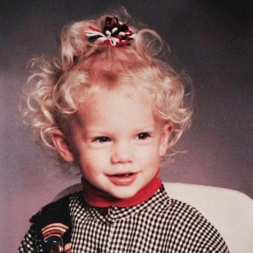
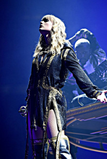

As a child, Taylor Swift lived on an 11 acre Christmas tree farm in Wyoming, Pennsylvania. When she was 10 years old, she wrote a three page poem the monster in my closet, which won the National Poetry Contest . In the same year, he began to perform in Philadelphia and surrounding areas. At the age of 11,he performed the American national anthem before the NBA Philadelphia 76ers.
In 2001, after watching the program of country singer Faith Hill on TV, she had the idea of becoming a country singer and going to Nashville, USA . After learning chords, she wrote her first song lucky you. In the same year, I drove to Nashville with my family and went to the music street with many record companies to send original music samples to the front desk of each record company.
Taylor Swift's parents moved to Nashville to help her daughter pursue her music dream. In 2003, after presenting original songs to RCA, Taylor Swift got a contract and started his music career. However, Taylor Swift, 15, couldn't accept the plan to wait three years for another record to be released, so he left the company.
Later, when Taylor Swift performed in Bluebird Cafe, where Nashville composers gathered, he attracted Scott bochetta's attention and became the first singer to sign a contract with his big machine record company.
  Look at next page